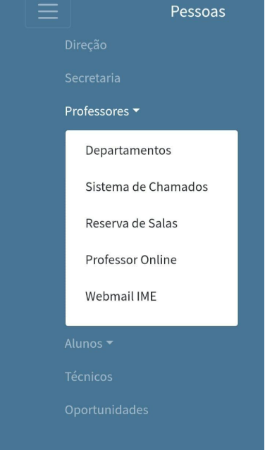

Nossos Cursos
-
Bacharelado em Ciência da Computação
Coordenação: Professora Karla Figueiredo Leite
-
Ciências Atuariais
Coordenação: Professor Eduardo Fraga Lima de Melo
-
Estatistica
- Ênfase em Finanças e Marketing
- Ênfase em Métodos e Decisões
Coordenação: Professor Marcello Montillo Provenza
-
Matemática
- Licenciatura
- Bacharelado
Coordenação: Professor Augusto Cesar de Castro Barbosa
Para facilitar o acompanhamento dos cursos, os
fluxogramas estão disponíveis no site do DEP.
A página pode ser acessada diretamente:
Departamentos
O Instituto de Matamática e Estatística - IME é formado por seis departamentos que englobam áreas do conhecimento afins. São eles:
-
DEP1 - Departamento de Análise Matemática
Chefe: Professor Guido Gerson Espiritu Ledesma
Subchefe: Professor Ronald David Ramos Guardia -
DEP2 - Departamento de Estruturas Matemática
Chefe: Professor Flávio Ferreira da Rocha
Subchefe: Professor Sajad Salami -
DEP3 - Departamento de Geometria e Representação Gráfica
Chefe: Professor Julio Cesar Correa Hoyos
Subchefe: Professor Abraham Enrique Munhos Flores -
DEP4 - Departamento de Informática e Ciência da Computação
Chefe: Professora Lucila Maria de Souza Bento
Subchefe: Professora Priscilla Fonseca de Abreu -
DEP5 - Departamento de Estatística
Chefe: Professor Guilherme Caldas de Castro
Subchefe: Professor José Fabiano da Serra Costa -
DEP6 - Departamento de Matemática Aplicada
Chefe: Professora Zochil González Arnas
Subchefe: Professora Aline de Lima Guedes Machado
No site do Instituto de Matemática e Estatística (IME), há uma área organizada por departamentos na qual estão listados os docentes efetivos vinculados a cada um desses departamentos, bem como seus respectivos e-mails institucionais.

No início de cada período acadêmico, deve-se proceder à exclusão dos documentos anteriormente utilizados, mediante envio à lixeira, e à geração de novos documentos. Tal procedimento é imprescindível para a atualização das informações vigentes.
Site do IME - Área do Aluno